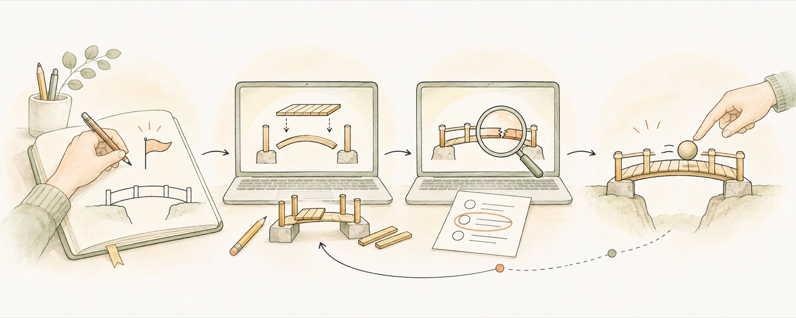

我怎么让 agents 把事做完

我理想的用法很直接：一批 agents 当工人，另一批当监工。工人负责查资料、动手做、反复改；监工拿着同一套标准去验最后的成品。我要的是拿来就能用、也能动手验的东西。方案讲得头头是道没用，剩下的活得干完才算数。
所以开头那一步，我会尽量把问题、目标、限制条件和验收标准说透：最后要交出什么？哪些事实可以引？做到什么程度算过关？这些定下来，后面才不会跑偏。如果一开始想法还散，先聊聊没问题，但聊着聊着得落到一个具体的成品上。
让监工直接看成品
交接验收的时候，我会把原始资料和成品一块儿塞给审查 agent。如果它只看执行者写的那份工作总结，十有八九会踩进同一个盲区。
Boris Cherny 聊过怎么给 agent 接上验证反馈，道理相通：想让它把活越改越好，就得让它看到当前结果哪里不对，不然它不知道下一刀该往哪儿改。原文
跑长任务还得考虑交接：换个会话接手，能不能一眼看清目标是什么、之前的决定是为什么、还有哪些坑没填？Anthropic 关于上下文工程的文章里给过不少实在办法，比如维护结构化笔记。原文
Addy Osmani 提到，让 agent 持续干活，既要有明确的收尾条件，也不能让干活的自己当裁判。这跟我想要的路子对得上。不过就算所有检查都亮了绿灯，最后的成品我还是要亲自过一眼。原文
我也会换另一个模型来专门挑刺，找反例、找遗漏。前提还是一样：得让它直接接触原始依据。光读前一个 agent 写的摘要，漏掉的东西还是会原封不动传下去。碰上意见打架，别靠猜，回到原始来源、数据或者实际跑出来的结果上看，谁贴近现实听谁的。